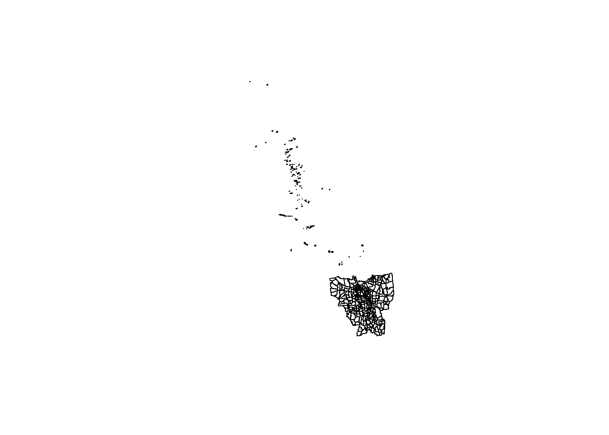
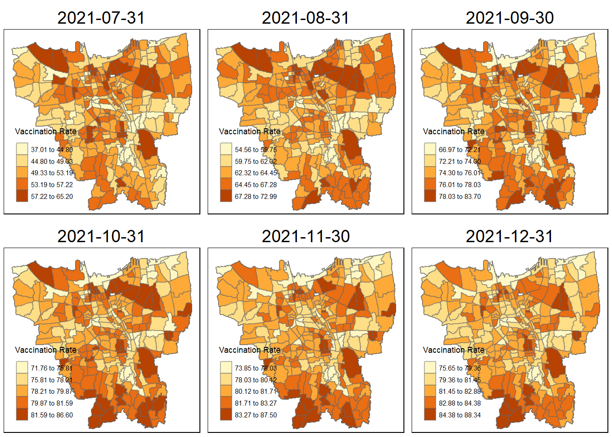

pacman::p_load(sf, tidyverse, tmap, spdep, sfdep, readxl, plyr)Take-home Exercise 2
1 Setting the scene
Since late December 2019, an outbreak of a novel coronavirus disease (COVID-19; previously known as 2019-nCoV) was reported in Wuhan, China, which had subsequently affected 210 countries worldwide. In general, COVID-19 is an acute resolved disease but it can also be deadly, with a 2% case fatality rate.
The COVID-19 vaccination in Indonesia is an ongoing mass immunisation in response to the COVID-19 pandemic in Indonesia. On 13 January 2021, the program commenced when President Joko Widodo was vaccinated at the presidential palace. In terms of total doses given, Indonesia ranks third in Asia and fifth in the world.
According to wikipedia, as of 5 February 2023 at 18:00 WIB (UTC+7), 204,266,655 people had received the first dose of the vaccine and 175,131,893 people had been fully vaccinated; 69,597,474 of them had been inoculated with the booster or the third dose, while 1,585,164 had received the fourth dose. Jakarta has the highest percentage of population fully vaccinated with 103.46%, followed by Bali and Special Region of Yogyakarta with 85.45% and 83.02% respectively.
Despite its compactness, the cumulative vaccination rate are not evenly distributed within DKI Jakarta. The question is where are the sub-districts with relatively higher number of vaccination rate and how they changed over time.
2 Objectives
Exploratory Spatial Data Analysis (ESDA) hold tremendous potential to address complex problems facing society. In this study, you are tasked to apply appropriate Local Indicators of Spatial Association (LISA) and Emerging Hot Spot Analysis (EHSA) to undercover the spatio-temporal trends of COVID-19 vaccination in DKI Jakarta.
3 Tasks
Choropleth Mapping and Analysis - Compute the monthly vaccination rate from July 2021 to June 2022 at sub-district (also known as kelurahan in Bahasa Indonesia) level, - Prepare the monthly vaccination rate maps by using appropriate tmap functions, - Describe the spatial patterns revealed by the choropleth maps (not more than 200 words).
Local Gi* Analysis With reference to the vaccination rate maps prepared in ESDA:
- Compute local Gi* values of the monthly vaccination rate, Display the Gi* maps of the monthly vaccination rate. The maps should only display the significant (i.e. p-value < 0.05)
- With reference to the analysis results, draw statistical conclusions (not more than 250 words).
Emerging Hot Spot Analysis(EHSA) With reference to the local Gi* values of the vaccination rate maps prepared in the previous section:
- Perform Mann-Kendall Test by using the spatio-temporal local Gi* values,
- Select three sub-districts and describe the temporal trends revealed (not more than 250 words), and
- Prepared a EHSA map of the Gi* values of vaccination rate. The maps should only display the significant (i.e. p-value < 0.05).
- With reference to the EHSA map prepared, describe the spatial patterns revelaed. (not more than 250 words).
4 The Data
4.1 Aspatial
For the purpose of this assignment, data from Riwayat File Vaksinasi DKI Jakarta will be used. Daily vaccination data is provided.
4.2 Geospatial
For the purposes of this study, DKI Jakarta administration boundary 2019 will be used downloaded from Indonesia Geospatial portal here.
5 Importing required R packages
6 Geospatial Data Wrangling
6.1 Importing geospatial data
jakarta <- st_read(dsn="data/geospatial",
layer="BATAS_DESA_DESEMBER_2019_DUKCAPIL_DKI_JAKARTA") Reading layer `BATAS_DESA_DESEMBER_2019_DUKCAPIL_DKI_JAKARTA' from data source
`C:\annatrw\IS415\Take-home_Ex\Take-home_Ex02\data\geospatial'
using driver `ESRI Shapefile'
Simple feature collection with 269 features and 161 fields
Geometry type: MULTIPOLYGON
Dimension: XY
Bounding box: xmin: 106.3831 ymin: -6.370815 xmax: 106.9728 ymax: -5.184322
Geodetic CRS: WGS 84removing missing values [credit megan]
jakarta[rowSums(is.na(jakarta))!=0,]Simple feature collection with 2 features and 161 fields
Geometry type: MULTIPOLYGON
Dimension: XY
Bounding box: xmin: 106.8412 ymin: -6.154036 xmax: 106.8612 ymax: -6.144973
Geodetic CRS: WGS 84
OBJECT_ID KODE_DESA DESA KODE PROVINSI KAB_KOTA KECAMATAN
243 25645 31888888 DANAU SUNTER 318888 DKI JAKARTA <NA> <NA>
244 25646 31888888 DANAU SUNTER DLL 318888 DKI JAKARTA <NA> <NA>
DESA_KELUR JUMLAH_PEN JUMLAH_KK LUAS_WILAY KEPADATAN PERPINDAHA JUMLAH_MEN
243 <NA> 0 0 0 0 0 0
244 <NA> 0 0 0 0 0 0
PERUBAHAN WAJIB_KTP SILAM KRISTEN KHATOLIK HINDU BUDHA KONGHUCU KEPERCAYAA
243 0 0 0 0 0 0 0 0 0
244 0 0 0 0 0 0 0 0 0
PRIA WANITA BELUM_KAWI KAWIN CERAI_HIDU CERAI_MATI U0 U5 U10 U15 U20 U25
243 0 0 0 0 0 0 0 0 0 0 0 0
244 0 0 0 0 0 0 0 0 0 0 0 0
U30 U35 U40 U45 U50 U55 U60 U65 U70 U75 TIDAK_BELU BELUM_TAMA TAMAT_SD SLTP
243 0 0 0 0 0 0 0 0 0 0 0 0 0 0
244 0 0 0 0 0 0 0 0 0 0 0 0 0 0
SLTA DIPLOMA_I DIPLOMA_II DIPLOMA_IV STRATA_II STRATA_III BELUM_TIDA
243 0 0 0 0 0 0 0
244 0 0 0 0 0 0 0
APARATUR_P TENAGA_PEN WIRASWASTA PERTANIAN NELAYAN AGAMA_DAN PELAJAR_MA
243 0 0 0 0 0 0 0
244 0 0 0 0 0 0 0
TENAGA_KES PENSIUNAN LAINNYA GENERATED KODE_DES_1 BELUM_ MENGUR_ PELAJAR_
243 0 0 0 <NA> <NA> 0 0 0
244 0 0 0 <NA> <NA> 0 0 0
PENSIUNA_1 PEGAWAI_ TENTARA KEPOLISIAN PERDAG_ PETANI PETERN_ NELAYAN_1
243 0 0 0 0 0 0 0 0
244 0 0 0 0 0 0 0 0
INDUSTR_ KONSTR_ TRANSP_ KARYAW_ KARYAW1 KARYAW1_1 KARYAW1_12 BURUH BURUH_
243 0 0 0 0 0 0 0 0 0
244 0 0 0 0 0 0 0 0 0
BURUH1 BURUH1_1 PEMBANT_ TUKANG TUKANG_1 TUKANG_12 TUKANG__13 TUKANG__14
243 0 0 0 0 0 0 0 0
244 0 0 0 0 0 0 0 0
TUKANG__15 TUKANG__16 TUKANG__17 PENATA PENATA_ PENATA1_1 MEKANIK SENIMAN_
243 0 0 0 0 0 0 0 0
244 0 0 0 0 0 0 0 0
TABIB PARAJI_ PERANCA_ PENTER_ IMAM_M PENDETA PASTOR WARTAWAN USTADZ JURU_M
243 0 0 0 0 0 0 0 0 0 0
244 0 0 0 0 0 0 0 0 0 0
PROMOT ANGGOTA_ ANGGOTA1 ANGGOTA1_1 PRESIDEN WAKIL_PRES ANGGOTA1_2
243 0 0 0 0 0 0 0
244 0 0 0 0 0 0 0
ANGGOTA1_3 DUTA_B GUBERNUR WAKIL_GUBE BUPATI WAKIL_BUPA WALIKOTA WAKIL_WALI
243 0 0 0 0 0 0 0 0
244 0 0 0 0 0 0 0 0
ANGGOTA1_4 ANGGOTA1_5 DOSEN GURU PILOT PENGACARA_ NOTARIS ARSITEK AKUNTA_
243 0 0 0 0 0 0 0 0 0
244 0 0 0 0 0 0 0 0 0
KONSUL_ DOKTER BIDAN PERAWAT APOTEK_ PSIKIATER PENYIA_ PENYIA1 PELAUT
243 0 0 0 0 0 0 0 0 0
244 0 0 0 0 0 0 0 0 0
PENELITI SOPIR PIALAN PARANORMAL PEDAGA_ PERANG_ KEPALA_ BIARAW_ WIRASWAST_
243 0 0 0 0 0 0 0 0 0
244 0 0 0 0 0 0 0 0 0
LAINNYA_12 LUAS_DESA KODE_DES_3 DESA_KEL_1 KODE_12
243 0 0 <NA> <NA> 0
244 0 0 <NA> <NA> 0
geometry
243 MULTIPOLYGON (((106.8612 -6...
244 MULTIPOLYGON (((106.8504 -6...jakarta <- na.omit(jakarta,c("DESA_KELUR"))changing crs
st_crs(jakarta)Coordinate Reference System:
User input: WGS 84
wkt:
GEOGCRS["WGS 84",
DATUM["World Geodetic System 1984",
ELLIPSOID["WGS 84",6378137,298.257223563,
LENGTHUNIT["metre",1]]],
PRIMEM["Greenwich",0,
ANGLEUNIT["degree",0.0174532925199433]],
CS[ellipsoidal,2],
AXIS["latitude",north,
ORDER[1],
ANGLEUNIT["degree",0.0174532925199433]],
AXIS["longitude",east,
ORDER[2],
ANGLEUNIT["degree",0.0174532925199433]],
ID["EPSG",4326]]https://epsg.io/23845
jakarta <- st_transform(jakarta, 23845)st_crs(jakarta)Coordinate Reference System:
User input: EPSG:23845
wkt:
PROJCRS["DGN95 / Indonesia TM-3 zone 54.1",
BASEGEOGCRS["DGN95",
DATUM["Datum Geodesi Nasional 1995",
ELLIPSOID["WGS 84",6378137,298.257223563,
LENGTHUNIT["metre",1]]],
PRIMEM["Greenwich",0,
ANGLEUNIT["degree",0.0174532925199433]],
ID["EPSG",4755]],
CONVERSION["Indonesia TM-3 zone 54.1",
METHOD["Transverse Mercator",
ID["EPSG",9807]],
PARAMETER["Latitude of natural origin",0,
ANGLEUNIT["degree",0.0174532925199433],
ID["EPSG",8801]],
PARAMETER["Longitude of natural origin",139.5,
ANGLEUNIT["degree",0.0174532925199433],
ID["EPSG",8802]],
PARAMETER["Scale factor at natural origin",0.9999,
SCALEUNIT["unity",1],
ID["EPSG",8805]],
PARAMETER["False easting",200000,
LENGTHUNIT["metre",1],
ID["EPSG",8806]],
PARAMETER["False northing",1500000,
LENGTHUNIT["metre",1],
ID["EPSG",8807]]],
CS[Cartesian,2],
AXIS["easting (X)",east,
ORDER[1],
LENGTHUNIT["metre",1]],
AXIS["northing (Y)",north,
ORDER[2],
LENGTHUNIT["metre",1]],
USAGE[
SCOPE["Cadastre."],
AREA["Indonesia - onshore east of 138°E."],
BBOX[-9.19,138,-1.49,141.01]],
ID["EPSG",23845]]6.2 Removal of outer islands [creds megan]
plot(st_geometry(jakarta))
tm_shape(jakarta) +
tm_polygons("KAB_KOTA")
jakarta <- filter(jakarta, KAB_KOTA != "KEPULAUAN SERIBU")6.3 Retain first nine fields of DKI Jakarta sf data frame
as per assignment requirement
jakarta <- jakarta[, 0:9]6.4 translation of column names
using google translate and dplyr rename function [https://dplyr.tidyverse.org/reference/rename.html]
jakarta <- jakarta %>% dplyr::rename(
village_code=KODE_DESA,
village = DESA,
code = KODE,
province= PROVINSI,
city = KAB_KOTA,
district = KECAMATAN,
subdistrict = DESA_KELUR,
total_population = JUMLAH_PEN
)
jakartaSimple feature collection with 261 features and 9 fields
Geometry type: MULTIPOLYGON
Dimension: XY
Bounding box: xmin: -3644275 ymin: 663887.8 xmax: -3606237 ymax: 701380.1
Projected CRS: DGN95 / Indonesia TM-3 zone 54.1
First 10 features:
OBJECT_ID village_code village code province city
1 25477 3173031006 KEAGUNGAN 317303 DKI JAKARTA JAKARTA BARAT
2 25478 3173031007 GLODOK 317303 DKI JAKARTA JAKARTA BARAT
3 25397 3171031003 HARAPAN MULIA 317103 DKI JAKARTA JAKARTA PUSAT
4 25400 3171031006 CEMPAKA BARU 317103 DKI JAKARTA JAKARTA PUSAT
5 25390 3171021001 PASAR BARU 317102 DKI JAKARTA JAKARTA PUSAT
6 25391 3171021002 KARANG ANYAR 317102 DKI JAKARTA JAKARTA PUSAT
7 25394 3171021005 MANGGA DUA SELATAN 317102 DKI JAKARTA JAKARTA PUSAT
8 25386 3171011003 PETOJO UTARA 317101 DKI JAKARTA JAKARTA PUSAT
9 25403 3171041001 SENEN 317104 DKI JAKARTA JAKARTA PUSAT
10 25408 3171041006 BUNGUR 317104 DKI JAKARTA JAKARTA PUSAT
district subdistrict total_population
1 TAMAN SARI KEAGUNGAN 21609
2 TAMAN SARI GLODOK 9069
3 KEMAYORAN HARAPAN MULIA 29085
4 KEMAYORAN CEMPAKA BARU 41913
5 SAWAH BESAR PASAR BARU 15793
6 SAWAH BESAR KARANG ANYAR 33383
7 SAWAH BESAR MANGGA DUA SELATAN 35906
8 GAMBIR PETOJO UTARA 21828
9 SENEN SENEN 8643
10 SENEN BUNGUR 23001
geometry
1 MULTIPOLYGON (((-3626874 69...
2 MULTIPOLYGON (((-3627130 69...
3 MULTIPOLYGON (((-3621251 68...
4 MULTIPOLYGON (((-3620608 69...
5 MULTIPOLYGON (((-3624097 69...
6 MULTIPOLYGON (((-3624785 69...
7 MULTIPOLYGON (((-3624752 69...
8 MULTIPOLYGON (((-3626121 69...
9 MULTIPOLYGON (((-3623189 69...
10 MULTIPOLYGON (((-3622451 69...plot(st_geometry(jakarta))
further brief eda?
7 Aspatial Data Wrangling
##Importing aspatial data
#feb22 <- read_xlsx("data/aspatial/Data Vaksinasi Berbasis Kelurahan (27 Februari 2022).xlsx")keep until to be vaccinated population, remove first row
#feb22 <- feb22 [-1, 0:6][testing]
#str = "smth (dd month yyyy)"
#start = gregexpr(pattern="smth", str)[[1]] + 6
# end = gregexpr(pattern=")", str)[[1]] -17.1 Create aspatial data pre-processing function
aspatialfunc <- function(filepath){
final_file <- read_xlsx(filepath)
final_file <- final_file[-1,0:6]
start = gregexpr(pattern="Kelurahan", filepath)[[1]] + 11
end = gregexpr(pattern=")", filepath)[[1]] -1
final_file$date <- substr(filepath, start, end)
return(final_file)
}[creds megan]
using lapply function
fileslist <-list.files(path = "data/aspatial", pattern = "*.xlsx", full.names=TRUE)
# afterwards, for every element in fileslist, apply aspatial_process function
dflist <- lapply(seq_along(fileslist), function(x) aspatialfunc(fileslist[x]))head(dflist)[[1]]
# A tibble: 267 × 7
`KODE KELURAHAN` `WILAYAH KOTA` KECAMATAN KELUR…¹ SASARAN BELUM…² date
<chr> <chr> <chr> <chr> <dbl> <dbl> <chr>
1 3172051003 JAKARTA UTARA PADEMANGAN ANCOL 23947 4592 27 F…
2 3173041007 JAKARTA BARAT TAMBORA ANGKE 29381 5319 27 F…
3 3175041005 JAKARTA TIMUR KRAMAT JATI BALE K… 29074 5903 27 F…
4 3175031003 JAKARTA TIMUR JATINEGARA BALI M… 9752 1649 27 F…
5 3175101006 JAKARTA TIMUR CIPAYUNG BAMBU … 26285 4030 27 F…
6 3174031002 JAKARTA SELATAN MAMPANG PRAPA… BANGKA 21566 3950 27 F…
7 3175051002 JAKARTA TIMUR PASAR REBO BARU 23886 3344 27 F…
8 3175041004 JAKARTA TIMUR KRAMAT JATI BATU A… 47898 9382 27 F…
9 3171071002 JAKARTA PUSAT TANAH ABANG BENDUN… 21494 3772 27 F…
10 3175031002 JAKARTA TIMUR JATINEGARA BIDARA… 36689 7530 27 F…
# … with 257 more rows, and abbreviated variable names ¹KELURAHAN,
# ²`BELUM VAKSIN`
[[2]]
# A tibble: 267 × 7
`KODE KELURAHAN` `WILAYAH KOTA` KECAMATAN KELUR…¹ SASARAN BELUM…² date
<chr> <chr> <chr> <chr> <dbl> <dbl> <chr>
1 3172051003 JAKARTA UTARA PADEMANGAN ANCOL 23947 4449 30 A…
2 3173041007 JAKARTA BARAT TAMBORA ANGKE 29381 5101 30 A…
3 3175041005 JAKARTA TIMUR KRAMAT JATI BALE K… 29074 5699 30 A…
4 3175031003 JAKARTA TIMUR JATINEGARA BALI M… 9752 1598 30 A…
5 3175101006 JAKARTA TIMUR CIPAYUNG BAMBU … 26285 3857 30 A…
6 3174031002 JAKARTA SELATAN MAMPANG PRAPA… BANGKA 21566 3818 30 A…
7 3175051002 JAKARTA TIMUR PASAR REBO BARU 23886 3160 30 A…
8 3175041004 JAKARTA TIMUR KRAMAT JATI BATU A… 47898 9041 30 A…
9 3171071002 JAKARTA PUSAT TANAH ABANG BENDUN… 21494 3627 30 A…
10 3175031002 JAKARTA TIMUR JATINEGARA BIDARA… 36689 7172 30 A…
# … with 257 more rows, and abbreviated variable names ¹KELURAHAN,
# ²`BELUM VAKSIN`
[[3]]
# A tibble: 267 × 7
`KODE KELURAHAN` `WILAYAH KOTA` KECAMATAN KELUR…¹ SASARAN BELUM…² date
<chr> <chr> <chr> <chr> <dbl> <dbl> <chr>
1 3172051003 JAKARTA UTARA PADEMANGAN ANCOL 23947 4402 30 J…
2 3173041007 JAKARTA BARAT TAMBORA ANGKE 29381 5041 30 J…
3 3175041005 JAKARTA TIMUR KRAMAT JATI BALE K… 29074 5632 30 J…
4 3175031003 JAKARTA TIMUR JATINEGARA BALI M… 9752 1576 30 J…
5 3175101006 JAKARTA TIMUR CIPAYUNG BAMBU … 26285 3791 30 J…
6 3174031002 JAKARTA SELATAN MAMPANG PRAPA… BANGKA 21566 3778 30 J…
7 3175051002 JAKARTA TIMUR PASAR REBO BARU 23886 3110 30 J…
8 3175041004 JAKARTA TIMUR KRAMAT JATI BATU A… 47898 8917 30 J…
9 3171071002 JAKARTA PUSAT TANAH ABANG BENDUN… 21494 3580 30 J…
10 3175031002 JAKARTA TIMUR JATINEGARA BIDARA… 36689 7071 30 J…
# … with 257 more rows, and abbreviated variable names ¹KELURAHAN,
# ²`BELUM VAKSIN`
[[4]]
# A tibble: 267 × 7
`KODE KELURAHAN` `WILAYAH KOTA` KECAMATAN KELUR…¹ SASARAN BELUM…² date
<chr> <chr> <chr> <chr> <dbl> <dbl> <chr>
1 3172051003 JAKARTA UTARA PADEMANGAN ANCOL 23947 5527 30 N…
2 3173041007 JAKARTA BARAT TAMBORA ANGKE 29381 5986 30 N…
3 3175041005 JAKARTA TIMUR KRAMAT JATI BALE K… 29074 6802 30 N…
4 3175031003 JAKARTA TIMUR JATINEGARA BALI M… 9752 1920 30 N…
5 3175101006 JAKARTA TIMUR CIPAYUNG BAMBU … 26285 4612 30 N…
6 3174031002 JAKARTA SELATAN MAMPANG PRAPA… BANGKA 21566 4346 30 N…
7 3175051002 JAKARTA TIMUR PASAR REBO BARU 23886 3776 30 N…
8 3175041004 JAKARTA TIMUR KRAMAT JATI BATU A… 47898 10985 30 N…
9 3171071002 JAKARTA PUSAT TANAH ABANG BENDUN… 21494 4187 30 N…
10 3175031002 JAKARTA TIMUR JATINEGARA BIDARA… 36689 8447 30 N…
# … with 257 more rows, and abbreviated variable names ¹KELURAHAN,
# ²`BELUM VAKSIN`
[[5]]
# A tibble: 267 × 7
`KODE KELURAHAN` `WILAYAH KOTA` KECAMATAN KELUR…¹ SASARAN BELUM…² date
<chr> <chr> <chr> <chr> <dbl> <dbl> <chr>
1 3172051003 JAKARTA UTARA PADEMANGAN ANCOL 23947 6688 30 S…
2 3173041007 JAKARTA BARAT TAMBORA ANGKE 29381 7581 30 S…
3 3175041005 JAKARTA TIMUR KRAMAT JATI BALE K… 29074 8708 30 S…
4 3175031003 JAKARTA TIMUR JATINEGARA BALI M… 9752 2517 30 S…
5 3175101006 JAKARTA TIMUR CIPAYUNG BAMBU … 26285 6252 30 S…
6 3174031002 JAKARTA SELATAN MAMPANG PRAPA… BANGKA 21566 5785 30 S…
7 3175051002 JAKARTA TIMUR PASAR REBO BARU 23886 4899 30 S…
8 3175041004 JAKARTA TIMUR KRAMAT JATI BATU A… 47898 14105 30 S…
9 3171071002 JAKARTA PUSAT TANAH ABANG BENDUN… 21494 5239 30 S…
10 3175031002 JAKARTA TIMUR JATINEGARA BIDARA… 36689 10626 30 S…
# … with 257 more rows, and abbreviated variable names ¹KELURAHAN,
# ²`BELUM VAKSIN`
[[6]]
# A tibble: 267 × 7
`KODE KELURAHAN` `WILAYAH KOTA` KECAMATAN KELUR…¹ SASARAN BELUM…² date
<chr> <chr> <chr> <chr> <dbl> <dbl> <chr>
1 3172051003 JAKARTA UTARA PADEMANGAN ANCOL 23947 9191 31 A…
2 3173041007 JAKARTA BARAT TAMBORA ANGKE 29381 10400 31 A…
3 3175041005 JAKARTA TIMUR KRAMAT JATI BALE K… 29074 12510 31 A…
4 3175031003 JAKARTA TIMUR JATINEGARA BALI M… 9752 3704 31 A…
5 3175101006 JAKARTA TIMUR CIPAYUNG BAMBU … 26285 9416 31 A…
6 3174031002 JAKARTA SELATAN MAMPANG PRAPA… BANGKA 21566 8345 31 A…
7 3175051002 JAKARTA TIMUR PASAR REBO BARU 23886 7751 31 A…
8 3175041004 JAKARTA TIMUR KRAMAT JATI BATU A… 47898 19908 31 A…
9 3171071002 JAKARTA PUSAT TANAH ABANG BENDUN… 21494 8033 31 A…
10 3175031002 JAKARTA TIMUR JATINEGARA BIDARA… 36689 15563 31 A…
# … with 257 more rows, and abbreviated variable names ¹KELURAHAN,
# ²`BELUM VAKSIN`vacc_jakarta <- ldply(dflist, data.frame)##Formatting date column
[creds megan] https://www.rdocumentation.org/packages/base/versions/3.6.2/topics/locales
https://www.rdocumentation.org/packages/base/versions/3.6.2/topics/strptime
Sys.setlocale(locale="ind")[1] "LC_COLLATE=Indonesian_Indonesia.1252;LC_CTYPE=Indonesian_Indonesia.1252;LC_MONETARY=Indonesian_Indonesia.1252;LC_NUMERIC=C;LC_TIME=Indonesian_Indonesia.1252"vacc_jakarta$date <- c(vacc_jakarta$date) %>%
as.Date(vacc_jakarta$date, format ="%d %B %Y")
glimpse(vacc_jakarta)Rows: 3,204
Columns: 7
$ KODE.KELURAHAN <chr> "3172051003", "3173041007", "3175041005", "3175031003",~
$ WILAYAH.KOTA <chr> "JAKARTA UTARA", "JAKARTA BARAT", "JAKARTA TIMUR", "JAK~
$ KECAMATAN <chr> "PADEMANGAN", "TAMBORA", "KRAMAT JATI", "JATINEGARA", "~
$ KELURAHAN <chr> "ANCOL", "ANGKE", "BALE KAMBANG", "BALI MESTER", "BAMBU~
$ SASARAN <dbl> 23947, 29381, 29074, 9752, 26285, 21566, 23886, 47898, ~
$ BELUM.VAKSIN <dbl> 4592, 5319, 5903, 1649, 4030, 3950, 3344, 9382, 3772, 7~
$ date <date> 2022-02-27, 2022-02-27, 2022-02-27, 2022-02-27, 2022-0~vacc_jakarta <- vacc_jakarta %>% dplyr::rename(
village_code= KODE.KELURAHAN,
city = WILAYAH.KOTA,
district = KECAMATAN,
subdistrict = KELURAHAN,
target = SASARAN,
tobe_vaccinated = BELUM.VAKSIN)
vacc_jakarta$vaccinated <- with(vacc_jakarta, target-tobe_vaccinated)glimpse(vacc_jakarta)Rows: 3,204
Columns: 8
$ village_code <chr> "3172051003", "3173041007", "3175041005", "3175031003"~
$ city <chr> "JAKARTA UTARA", "JAKARTA BARAT", "JAKARTA TIMUR", "JA~
$ district <chr> "PADEMANGAN", "TAMBORA", "KRAMAT JATI", "JATINEGARA", ~
$ subdistrict <chr> "ANCOL", "ANGKE", "BALE KAMBANG", "BALI MESTER", "BAMB~
$ target <dbl> 23947, 29381, 29074, 9752, 26285, 21566, 23886, 47898,~
$ tobe_vaccinated <dbl> 4592, 5319, 5903, 1649, 4030, 3950, 3344, 9382, 3772, ~
$ date <date> 2022-02-27, 2022-02-27, 2022-02-27, 2022-02-27, 2022-~
$ vaccinated <dbl> 19355, 24062, 23171, 8103, 22255, 17616, 20542, 38516,~8 Combining geospatial and aspatial data
colnames(jakarta) [1] "OBJECT_ID" "village_code" "village" "code"
[5] "province" "city" "district" "subdistrict"
[9] "total_population" "geometry" colnames(vacc_jakarta)[1] "village_code" "city" "district" "subdistrict"
[5] "target" "tobe_vaccinated" "date" "vaccinated" combined_jakarta <- left_join(jakarta, vacc_jakarta,
by=c("village_code" = "village_code",
"district" = "district",
"subdistrict"="subdistrict",
"city"="city")
)[kiv]
combined_jakarta$vacc_rate <- combined_jakarta$vaccinated/combined_jakarta$total_population*1009 Choropleth Mapping and Analysis
tmap_mode("plot")
tm_shape(combined_jakarta) +
tm_fill('vacc_rate',
style= "quantile",
palette = "Blues",
title= "target") +
tm_layout(main.title = "Population by sub-district, Jakarta",
main.title.position= "center",
main.title.size = 1.2,
legend.height=0.45,
legend.width=0.35,
frame=TRUE)+
tm_borders(alpha=0.5)+
tm_compass(type='8star', size =2) +
tm_scale_bar()+
tm_grid(alpha=0.2)
https://www.biostars.org/p/180451/
jakarta_subdistrict <-jakarta$subdistrict
vacc_subdistrict <- vacc_jakarta$subdistrictvalues in aspatial vacc_jakarta that are not in geospatial jakarta
unique(vacc_subdistrict[!(vacc_subdistrict %in% jakarta_subdistrict)]) [1] "BALE KAMBANG" "HALIM PERDANA KUSUMAH" "JATI PULO"
[4] "KAMPUNG TENGAH" "KERENDANG" "KRAMAT JATI"
[7] "PAL MERIAM" "PINANG RANTI" "PULAU HARAPAN"
[10] "PULAU KELAPA" "PULAU PANGGANG" "PULAU PARI"
[13] "PULAU TIDUNG" "PULAU UNTUNG JAWA" "RAWA JATI" unique(jakarta_subdistrict[!(jakarta_subdistrict %in% vacc_subdistrict)])[1] "KRENDANG" "RAWAJATI" "TENGAH"
[4] "BALEKAMBANG" "PINANGRANTI" "JATIPULO"
[7] "PALMERIAM" "KRAMATJATI" "HALIM PERDANA KUSUMA"there is a mismatch, check values on coarser level - city
seribu city from aspatial not inside jakarta geospatial?
jakarta_city <-jakarta$city
vacc_city <- vacc_jakarta$cityunique(vacc_city[!(vacc_city %in% jakarta_city)])[1] "KAB.ADM.KEP.SERIBU"unique(jakarta_city[!(jakarta_city %in% vacc_city)])character(0)^see that seribu is islands[insert png]
removing seribu islands
vacc_jakarta <- filter(vacc_jakarta, city != "KAB.ADM.KEP.SERIBU")rejoin- clean up combined
combined_jakarta <- left_join(jakarta, vacc_jakarta,
by=c("village_code" = "village_code",
"district" = "district",
"subdistrict"="subdistrict",
"city"="city")
)run again, have same number of mismatched subdistricts
jakarta_subdistrict <-jakarta$subdistrict
vacc_subdistrict <- vacc_jakarta$subdistrictunique(vacc_subdistrict[!(vacc_subdistrict %in% jakarta_subdistrict)])[1] "BALE KAMBANG" "HALIM PERDANA KUSUMAH" "JATI PULO"
[4] "KAMPUNG TENGAH" "KERENDANG" "KRAMAT JATI"
[7] "PAL MERIAM" "PINANG RANTI" "RAWA JATI" unique(jakarta_subdistrict[!(jakarta_subdistrict %in% vacc_subdistrict)])[1] "KRENDANG" "RAWAJATI" "TENGAH"
[4] "BALEKAMBANG" "PINANGRANTI" "JATIPULO"
[7] "PALMERIAM" "KRAMATJATI" "HALIM PERDANA KUSUMA"re-alignment of mismatched subdistricts
jakarta$subdistrict[jakarta$subdistrict == 'BALEKAMBANG'] <- 'BALE KAMBANG'
jakarta$subdistrict[jakarta$subdistrict == 'HALIM PERDANA KUSUMA'] <- 'HALIM PERDANA KUSUMAH'
jakarta$subdistrict[jakarta$subdistrict == 'JATIPULO'] <- 'JATI PULO'
jakarta$subdistrict[jakarta$subdistrict == 'TENGAH'] <- 'KAMPUNG TENGAH'
jakarta$subdistrict[jakarta$subdistrict == 'KRENDANG'] <- 'KERENDANG'
jakarta$subdistrict[jakarta$subdistrict == 'KRAMATJATI'] <- 'KRAMAT JATI'
jakarta$subdistrict[jakarta$subdistrict == 'PALMERIAM'] <- 'PAL MERIAM'
jakarta$subdistrict[jakarta$subdistrict == 'PINANGRANTI'] <- 'PINANG RANTI'
jakarta$subdistrict[jakarta$subdistrict == 'RAWAJATI'] <- 'RAWA JATI'combined_jakarta <- left_join(jakarta, vacc_jakarta, by=c( "subdistrict"="subdistrict")
)^done handling mismatched subdistricts - should not have missing vaccination rates
[kiv] style values: https://www.rdocumentation.org/packages/tmap/versions/3.3-3/topics/tm_fill
use jenks- natural groupings of data/ good if relatively big differences in data
tmap_mode(“plot”) tm_shape(combined_jakarta) + tm_fill(‘vacc_rate’, style= “jenks”, palette = “Blues”, title= “population”) + tm_layout(main.title = “Distribution of vaccination rate by sub-district, Jakarta”, main.title.position= “center”, main.title.size = 1.2, legend.height=0.45, legend.width=0.35, frame=TRUE)+ tm_borders(alpha=0.5)+ tm_compass(type=‘8star’, size =2) + tm_scale_bar()+ tm_grid(alpha=0.2)
9.1 Visualising Monthly Vaccination Rate
combined_jakarta$vacc_rate <- combined_jakarta$vaccinated/combined_jakarta$total_population*100vaccine_rate <- combined_jakarta %>% select(8, 15, 18) %>% group_by(subdistrict, date) %>% ungroup() %>% pivot_wider(names_from= "date", values_from= "vacc_rate")tmap_mode("plot")
tm_shape(vaccine_rate)+
tm_fill("2021-07-31",
n= 6,
style = "jenks",
title = "Vaccine Rate") +
tm_layout(main.title = "Distribution of vaccination rates in July 2021",
main.title.position = "center",
main.title.size = 1,
legend.height = 0.5,
legend.width = 0.4,
frame = TRUE) +
tm_borders(alpha = 0.5)
monthly_maps <- function(df, varname) {
tm_shape(vaccine_rate) +
tm_polygons() +
tm_shape(df) +
tm_fill(varname,
style = "jenks",
title = "Vaccination Rate") +
tm_layout(main.title = varname,
main.title.position = "center",
main.title.size = 1.2,
legend.height = 0.45,
legend.width = 0.35,
frame = TRUE) +
tm_borders(alpha = 0.5)
}tmap_mode("plot")
tmap_arrange(
monthly_maps(vaccine_rate, "2021-07-31"),
monthly_maps(vaccine_rate, "2021-08-31"),
monthly_maps(vaccine_rate, "2021-09-30"),
monthly_maps(vaccine_rate, "2021-10-31"),
monthly_maps(vaccine_rate, "2021-11-30"),
monthly_maps(vaccine_rate, "2021-12-31"))
tmap_mode("plot")
tmap_arrange(
monthly_maps(vaccine_rate, "2022-01-31"),
monthly_maps(vaccine_rate, "2022-02-27"),
monthly_maps(vaccine_rate, "2022-03-31"),
monthly_maps(vaccine_rate, "2022-04-30"),
monthly_maps(vaccine_rate, "2022-05-31"),
monthly_maps(vaccine_rate, "2022-06-30"))
10 Local Gi* Analysis
num 10 hands on
11 Emerging Hot Spot Analysis (EHSA)
inclass 7